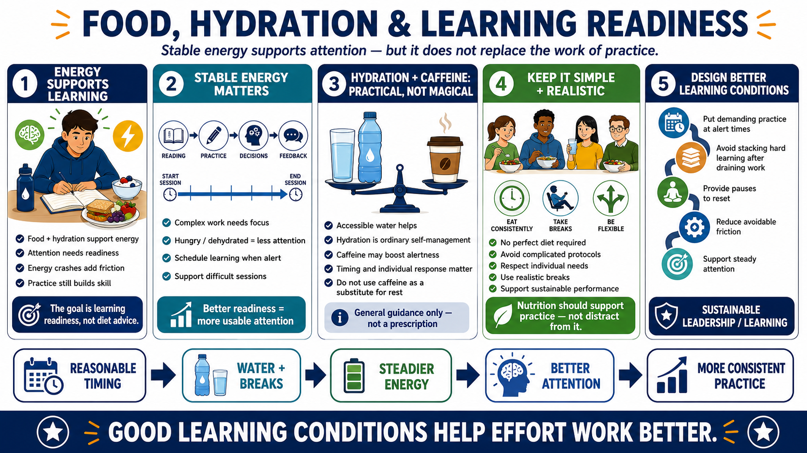

Nutrition, Hydration, and Energy Stability
Connecting to LMS... Progress: in progress

Narration
Food and hydration can contribute to energy, attention, and consistency in practical ways. This course avoids diet prescriptions, supplement protocols, and medical claims. The learning-focused point is that unstable energy can make difficult practice harder to sustain. If learners are distracted by hunger, dehydration, or energy crashes, attention is less available for the task.
Stable energy matters most during demanding learning sessions. Complex reading, skill practice, decision exercises, and feedback review all require attention. The goal is not to define one perfect diet. The goal is to notice that learners perform better when the session is scheduled and supported in a way that does not fight basic readiness.
Hydration can be discussed at a general level as part of ordinary self-management. Caffeine can also be a tool with tradeoffs. It may support alertness for some people, but it can also affect sleep, anxiety, or consistency depending on timing and individual response. Treating caffeine as a substitute for rest can weaken the larger learning system.
Nutrition should support sustainable performance rather than becoming a distraction from practice. A learner does not need a complicated protocol to benefit from practical planning. The question is whether the learning environment supports steady attention: reasonable timing, accessible water, realistic breaks, and enough flexibility to respect individual needs and constraints.
For course and workplace design, energy planning can be simple. Put the most demanding practice when learners are most likely to be alert. Avoid stacking difficult learning immediately after draining work when possible. Provide enough pause for people to reset. These choices do not make learning automatic, but they reduce avoidable friction around the effort that learning requires.